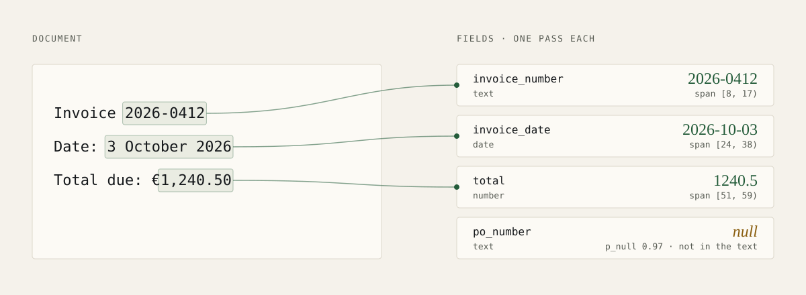

Release
Pea extraction is now in hosted Beta
Pea now extracts typed fields from text by pointing directly to evidence spans, live on /v1beta/extract.

Pea has a second capability. Alongside decisions, it now extracts structured data from text documents. You send a document and a schema of up to 64 typed fields. For each field, Pea points to a span of the original text as evidence, then code parses that span into a typed value. The span can still be the wrong one, so check it where it matters.

Spans, not generated text
Extraction runs strictly in prefill mode. Pea does not write out an answer. A presence head estimates whether the field appears in the document at all, and start and end heads point at the evidence. Offsets are half-open Unicode code point ranges, so [8, 17) in the example above is exactly 2026-0412.
Typed parsing happens in ordinary code. Numbers, dates, times, durations and lists are read from the cited span, so a returned date always corresponds to text in the document. When a field is probably absent, or the evidence does not parse into the requested type, value is null.
Try it
Extraction is live in Beta on the hosted API with the model identifier pea-pod-1. You need an API key with inference scope.
curl -sS https://api.itsvej.com/v1beta/extract \
-H "Authorization: Bearer $VEJ_API_KEY" \
-H "Content-Type: application/json" \
-d '{
"model": "pea-pod-1",
"state": "Invoice 2026-0412\nDate: 3 October 2026\nTotal due: €1,240.50",
"fields": {
"invoice_number": {"type": "text", "instructions": "The invoice number."},
"total": {"type": "number", "decimals": 2, "instructions": "The total amount due."}
}
}'
The extraction documentation covers all seven field types, the full response and the limits.
Development results
We measured extraction on 3,000 locked test documents during development.
| Measure | Result |
|---|---|
| Presence accuracy | 95.8% |
| Text exact match (rows with a gold span) | 80.4% |
| Typed exact match (rows with a gold span) | 99.8% |
| List F1 | 0.399 |
These are development results, not a published evaluation. Lists and receipts remain weak, and real-world quality has not been measured. Extraction is text only; images are refused. Each document-plus-field row is limited to 2,048 tokens. The weights are private.
Getting access
Hosted access starts with a console account. Every new account needs manual approval, and capacity is limited.

Written by